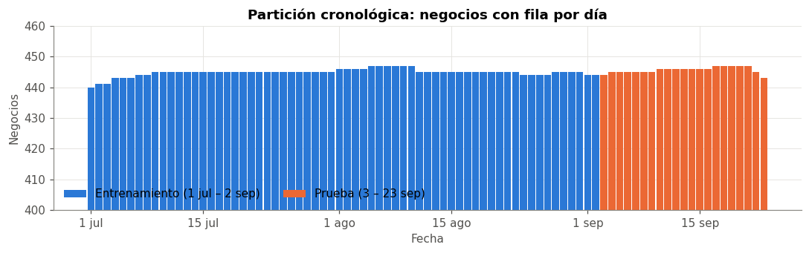
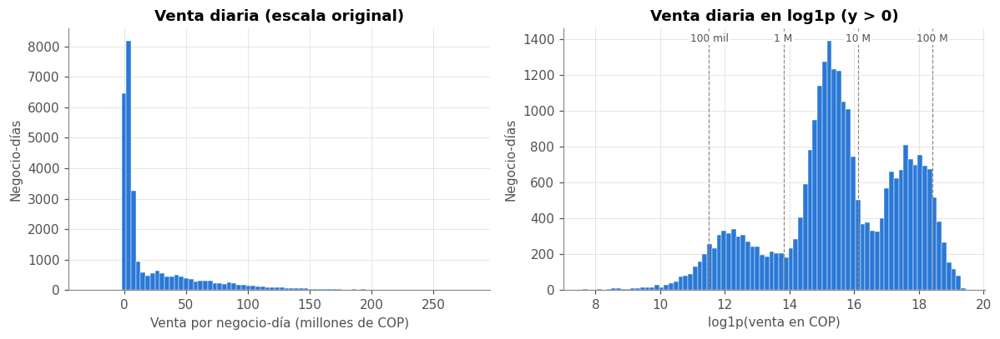

✂️ 3. Partición y variable objetivo#
Este capítulo fija antes de cualquier análisis qué días son de entrenamiento y cuáles de prueba. Desde aquí, toda decisión basada en estadísticas de los datos (EDA, umbrales, escalado, hiperparámetros) se calcula solo con train. El conjunto de prueba solo se vuelve a tocar en el capítulo 8, para la evaluación final.
Además se define la variable objetivo, su transformación y las métricas.
import numpy as np
import pandas as pd
import matplotlib.pyplot as plt
from scipy import stats
from comun import estilo, cargar_panel, fechas_eje, INICIO, CORTE, FIN, AZUL, NARANJA, GRIS
estilo()
SEED = 42
panel = cargar_panel()
print(f"panel: {len(panel):,} filas, {panel['negocio'].nunique()} negocios, {panel['fecha'].min().date()} a {panel['fecha'].max().date()}")
panel: 37,828 filas, 452 negocios, 2026-07-01 a 2026-09-23
🧭 3.1 Horizonte de pronóstico#
Elemento |
Decisión |
|---|---|
Qué se pronostica |
|
Cuándo |
Al cierre del día \(t-1\) se pronostica el día \(t\) |
Información disponible |
Todo lo observado hasta \(t-1\) (ventas por medio, días sin venta) + el calendario de \(t\) (día de la semana, festivo), que se conoce de antemano |
Información prohibida |
Cualquier dato del mismo día \(t\), en particular la venta por medio de pago de ese día, que suma exactamente el objetivo |
Se eligió \(h = 1\) porque es el uso operativo más directo (planear el día siguiente) y porque, con solo 85 días de historia, horizontes más largos dejarían muy pocos datos para entrenar y validar.
📆 3.2 Partición cronológica#
La regla es de calendario, no se eligió mirando resultados:
Prueba: las últimas 3 semanas completas (3 al 23 sep, 21 días). Así cada día de la semana aparece exactamente 3 veces en la prueba.
Entrenamiento: todo lo anterior (1 jul al 2 sep, 64 días).
No se barajan filas: todo el entrenamiento es anterior a toda la prueba.
panel["particion"] = np.where(panel["fecha"] <= CORTE, "train", "test")
resumen = panel.groupby("particion").agg(
desde=("fecha", "min"), hasta=("fecha", "max"), dias=("fecha", "nunique"),
filas=("fecha", "size"), negocios=("negocio", "nunique")).loc[["train", "test"]]
resumen["desde"] = resumen["desde"].dt.date
resumen["hasta"] = resumen["hasta"].dt.date
resumen["% filas"] = (resumen["filas"] / resumen["filas"].sum() * 100).round(1)
resumen
| desde | hasta | dias | filas | negocios | % filas | |
|---|---|---|---|---|---|---|
| particion | ||||||
| train | 2026-07-01 | 2026-09-02 | 64 | 28469 | 448 | 75.30 |
| test | 2026-09-03 | 2026-09-23 | 21 | 9359 | 448 | 24.70 |
# línea de tiempo de la partición (solo cuento filas, no miro ventas de test)
filas_dia = panel.groupby(["fecha", "particion"]).size().unstack(fill_value=0)
fig, ax = plt.subplots(figsize=(10, 3.2))
ax.bar(filas_dia.index, filas_dia.get("train", 0), color=AZUL, width=0.9, label="Entrenamiento (1 jul – 2 sep)")
ax.bar(filas_dia.index, filas_dia.get("test", 0), color=NARANJA, width=0.9, label="Prueba (3 – 23 sep)")
ax.set_ylim(400, 460)
ax.set_title("Partición cronológica: negocios con fila por día")
ax.set_ylabel("Negocios")
ax.set_xlabel("Fecha")
fechas_eje(ax, filas_dia.index)
ax.legend(loc="lower left", frameon=False, ncol=2)
plt.tight_layout()
plt.show()

Negocios en cada partición#
El panel es desbalanceado, así que reviso qué negocios quedan en cada lado del corte.
# [IA] clasifico negocios según en qué partición tienen filas
pres = panel.groupby("negocio")["particion"].agg(lambda s: " + ".join(sorted(set(s), reverse=True)))
dias_train = panel[panel["particion"] == "train"].groupby("negocio").size()
tabla = pres.value_counts().rename("negocios").to_frame()
print(tabla.to_string())
solo_test = pres[pres == "test"].index
print("\nnegocios que solo están en test (entraron en septiembre):", len(solo_test))
nuevos_train = dias_train[dias_train < 14]
print("negocios con menos de 14 días en train:", len(nuevos_train))
negocios
particion
train + test 444
train 4
test 4
negocios que solo están en test (entraron en septiembre): 4
negocios con menos de 14 días en train: 1
Interpretación#
Casi todos los negocios tienen historia en train y en test, que es lo que se necesita para pronosticar con rezagos.
Algunos negocios salen antes de septiembre (entregados en franquicia) y solo aportan a train.
Unos pocos entran en septiembre y solo existen en test. Para ellos no hay historia con la cual pronosticar el primer día.
Nota
Decisión: una fila solo se puede pronosticar si el negocio tiene la historia mínima que piden las variables del modelo (los rezagos más largos, que se fijan en los capítulos 6 y 7). Las filas sin esa historia se excluyen tanto de train como de test con la misma regla. En la práctica, un negocio nuevo necesitaría un modelo de arranque en frío, que queda fuera del alcance de este entregable.
🎯 3.3 Variable objetivo (solo train)#
El objetivo es venta_total (COP por negocio y día). Desde aquí todo se calcula solo con train.
train = panel[panel["particion"] == "train"].copy()
y = train["venta_total"]
def forma_de(v):
return [v.mean(), v.median(), v.std(), stats.skew(v), stats.kurtosis(v)]
z = np.log1p(y.clip(lower=0))
forma = pd.DataFrame({
"escala original (COP)": forma_de(y),
"log1p, todos": forma_de(z),
"log1p, solo y > 0": forma_de(z[y > 0]),
}, index=["media", "mediana", "desv. estándar", "asimetría", "curtosis (exceso)"])
print(f"filas de train: {len(y):,}")
print(f"días con venta 0: {(y == 0).sum()} ({(y == 0).mean():.2%}); de ellos sin registro: {train.loc[y == 0, 'sin_registro'].sum()}")
print(f"días con venta negativa: {(y < 0).sum()} | venta < 100 mil COP: {(y.between(0, 1e5, inclusive='right')).mean():.1%}")
forma
filas de train: 28,469
días con venta 0: 156 (0.55%); de ellos sin registro: 156
días con venta negativa: 2 | venta < 100 mil COP: 3.9%
| escala original (COP) | log1p, todos | log1p, solo y > 0 | |
|---|---|---|---|
| media | 23,155,449.07 | 15.45 | 15.53 |
| mediana | 5,439,790.00 | 15.51 | 15.52 |
| desv. estándar | 36,559,386.92 | 2.34 | 2.04 |
| asimetría | 2.35 | -1.84 | -0.50 |
| curtosis (exceso) | 6.27 | 9.11 | -0.17 |
fig, axes = plt.subplots(1, 2, figsize=(11, 3.8))
ax = axes[0]
ax.hist(y / 1e6, bins=80, color=AZUL, edgecolor="white", linewidth=0.3)
ax.set_title("Venta diaria (escala original)")
ax.set_xlabel("Venta por negocio-día (millones de COP)")
ax.set_ylabel("Negocio-días")
ax = axes[1]
ax.hist(np.log1p(y[y > 0]), bins=80, color=AZUL, edgecolor="white", linewidth=0.3)
ax.set_title("Venta diaria en log1p (y > 0)")
ax.set_xlabel("log1p(venta en COP)")
ax.set_ylabel("Negocio-días")
for v, et in [(np.log1p(1e5), "100 mil"), (np.log1p(1e6), "1 M"), (np.log1p(1e7), "10 M"), (np.log1p(1e8), "100 M")]:
ax.axvline(v, color=GRIS, lw=0.8, ls="--")
ax.text(v, ax.get_ylim()[1] * 0.95, et, fontsize=8, ha="center", color="#52514e",
bbox=dict(facecolor="white", edgecolor="none", pad=1))
plt.tight_layout()
plt.show()

Interpretación#
En escala original la venta está muy sesgada a la derecha: la media es varias veces la mediana, porque unos pocos negocios grandes venden cientos de millones al día. Un modelo lineal ajustado en esa escala dedicaría casi todo su esfuerzo a los negocios grandes.
En
log1py sin los ceros, la asimetría pasa de 2,35 a −0,50 y la curtosis queda cerca de la normal (ver tabla) y se ven los grupos de tamaño del capítulo 1 (alrededor de 100 mil, 5 M y 50 M COP/día).Si se incluyen los ceros, la asimetría en log vuelve a ser fuerte (negativa). Los 156 días sin venta (0,55 % de train, todos días sin registro) forman un pico aislado en 0, muy lejos del resto (~15 en log). Son pocos, pero en escala log generan errores enormes: por eso el modelo recibe
dias_sin_venta7como variable, y en el capítulo 8 se revisa cuánto pesan en el error.Los negativos son solo 2 días (reversos).
Nota
Decisiones sobre el objetivo (hallazgo → decisión):
Hallazgo |
Decisión |
|---|---|
Asimetría fuerte y escala que cambia varios órdenes de magnitud entre negocios |
Modelar en \(\log(1 + y)\) y devolver las predicciones a COP con \(e^{\hat z} - 1\) |
|
Recortar el objetivo a 0 solo al transformarlo para entrenar (regla fija, no depende de los datos). La evaluación usa el valor real, incluidos los negativos |
Días con venta 0 o muy pequeña |
El MAPE se calcula solo con \(y > 0\) y se acompaña de métricas estables (ver 3.4) |
La transformación va dentro del Pipeline (TransformedTargetRegressor, cap. 7), así que no hay un paso manual que se pueda aplicar mal en test.
📐 3.4 Métricas de evaluación#
El enunciado pide RMSE, MAPE y R². Por lo que se vio arriba, se agregan métricas que no se desestabilizan con valores pequeños:
Métrica |
Escala |
Por qué |
|---|---|---|
RMSE |
COP |
Error típico en dinero. Lo dominan los negocios grandes |
RMSE log |
log1p |
Error relativo promedio. Trata por igual a negocios grandes y pequeños. Es la métrica que se optimiza en la validación cruzada |
MAPE |
% (solo \(y > 0\)) |
Pedida por el enunciado. Se infla con los días de venta muy pequeña: un día de 10 mil COP con pronóstico de 100 mil da un error del 900 % |
MdAPE |
% |
Mediana del error porcentual: la versión robusta del MAPE |
WAPE |
% |
$\sum |
R² |
COP y log |
Pedido por el enunciado. Ojo: en un panel, gran parte del R² viene de la diferencia de tamaño entre negocios (ver cap. 8) |
R² intra-negocio |
log |
R² después de restar a cada negocio su media: mide si el modelo captura las variaciones día a día, que es lo difícil |
Todas las métricas se comparan contra las líneas base ingenuas (persistencia e ingenuo estacional). Un modelo que no les gane no sirve, por alto que sea su R².
✅ Resumen del capítulo#
Aspecto |
Decisión |
|---|---|
Horizonte |
\(h = 1\) día |
Train |
1 jul – 2 sep 2026 (64 días) |
Test |
3 – 23 sep 2026 (21 días = 3 semanas completas) |
Filas sin historia suficiente |
Se excluyen de train y de test con la misma regla |
Objetivo |
|
Métrica de optimización |
RMSE en escala log |
Métricas reportadas |
RMSE, RMSE log, MAPE, MdAPE, WAPE, R², R² log, R² intra-negocio |
Advertencia
Limitaciones de la partición. (1) El test solo tiene 3 semanas y ningún festivo (los 3 festivos del periodo están en train). (2) Con 64 días de train, la validación cruzada temporal tendrá pocos folds cortos (cap. 6 y 8). (3) El resultado en test describe septiembre de 2026, no el comportamiento de todo el año.